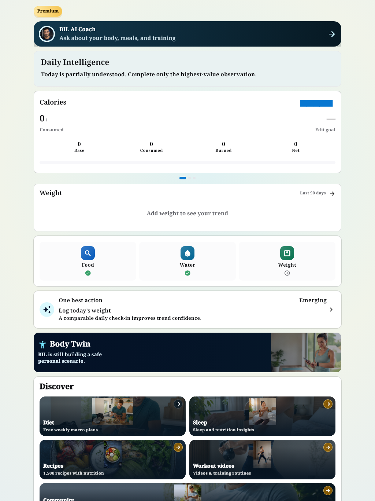
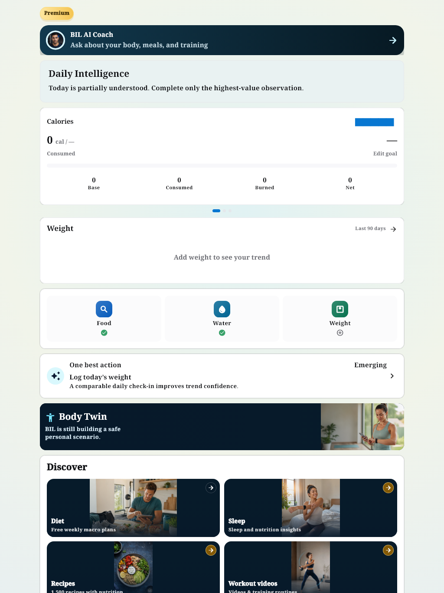
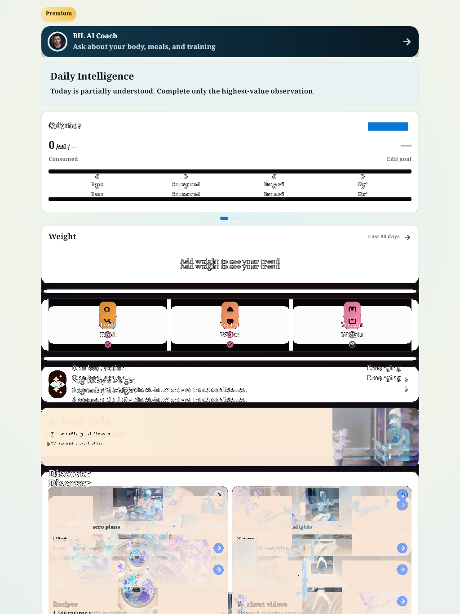
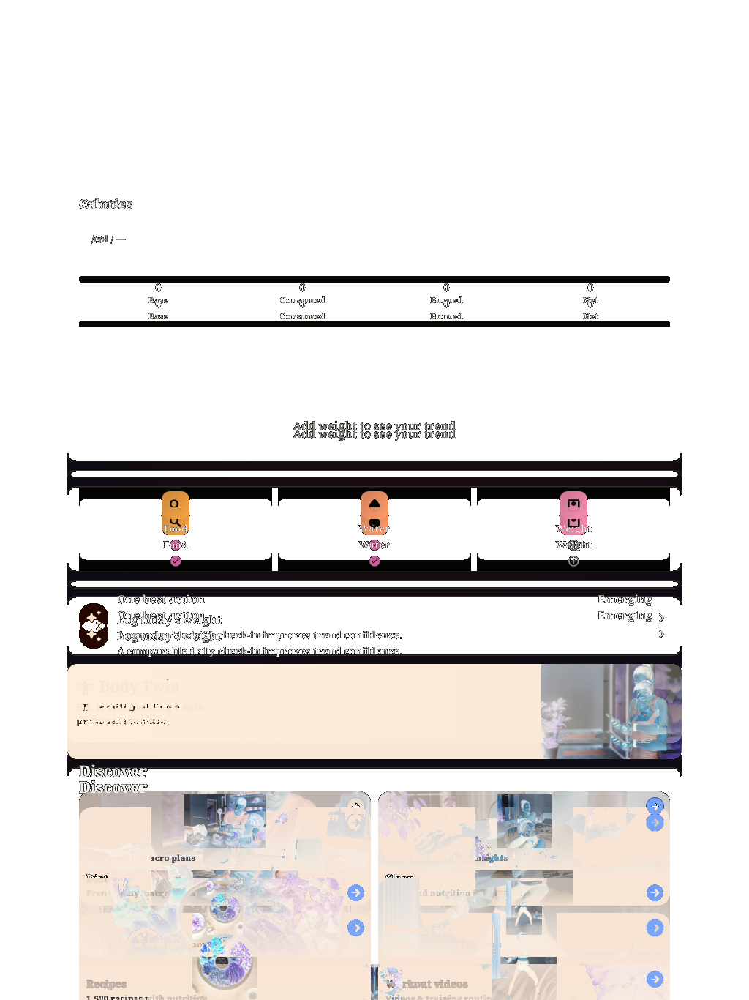

التصنيف المقترح: B. Light1024: نفس 0 واختبارالبيانات الفارغة؛ صفالقيم والWeight وأزرارFood-Water-Weight وDiscover تحركت مع مصدرالبطاقة الأحدث؛ ليستزيادة2px وحدها.
NotoNaskhArabic + loaded fallback
Baseline test/goldens/premium_dashboard_light_corrected.png, commit c893df0ae37098bf574a298e88698ff52ecfdb8b
Source: lib/features/dashboard/widgets/dashboard_reference_goal_components.dart
HOLD RED; main QA approves this exact pair individually. A: replace invalid font evidence only after signoff; B: verify intended source history and approve or reclassify C.
Same pixels as previous failed actual: True. Master unchanged, no approval.



